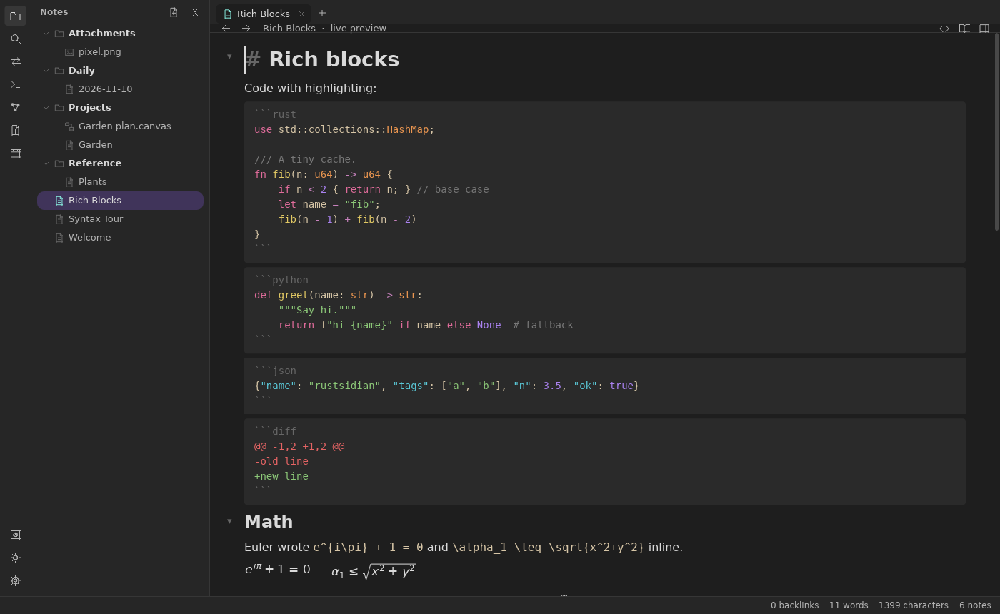
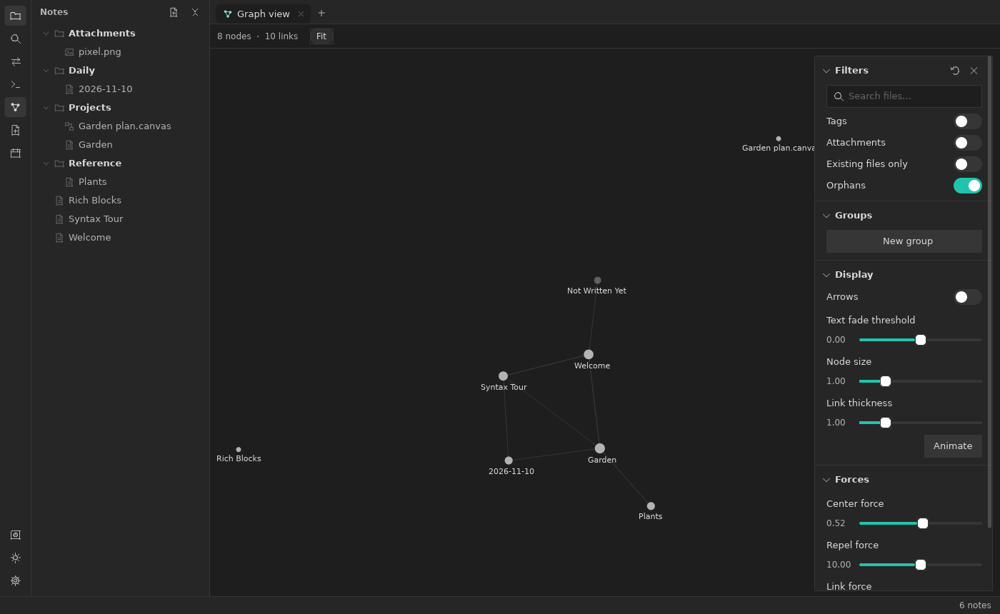
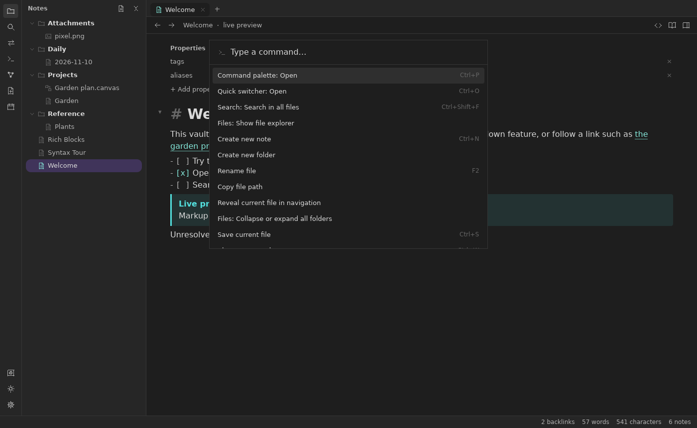
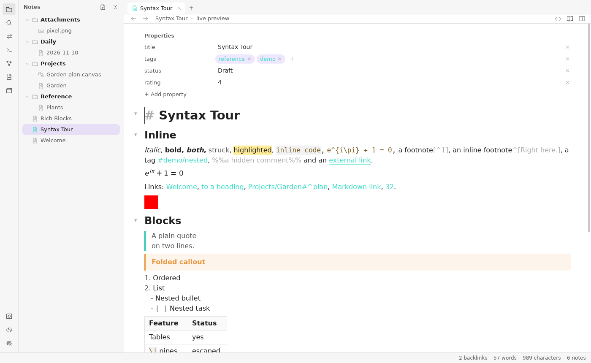

Rustsidian is a Markdown knowledge base written in Rust. Plain files in a folder you own, linked thinking, and an app that opens instantly and uses almost nothing while you write.
Windows · macOS · Linux — open source, MIT or Apache-2.0

Write in Markdown, link ideas together, and see how they connect, all without a browser engine in sight.
Markup hides as you type. Multi-cursor, undo tree, folding, smart lists, tables, Vim mode and a properties editor.
Link notes, headings and blocks. Rename a note and every link to it is updated.
Global and local graphs with filters, color groups and adjustable forces.
Lay out notes, text, links and groups on an open JSON Canvas board.
Full-text search across 50,000 notes with tag, path, line, property, regex and boolean operators.
Typeset LaTeX, Mermaid flowcharts and sequence diagrams, and syntax highlighting for 15+ languages.
Drop in CSS themes and snippets that reload live. Every command can be rebound.
WASM plugins with a permission model, and Rhai scripts for your own commands.

A live force-directed graph that stays smooth at 10,000 notes.
Every action lives in the command palette with a stable id and a hotkey you can change.


A CSS engine built in Rust loads community themes and your snippets, and reloads them as you save.
Measured with synthetic vaults on a 12-core machine using software rendering.
Get the latest release for your system and check it against SHA256SUMS.txt.
| System | File | |
|---|---|---|
| Windows 10/11 (x64) | windows-x86_64.zip | Unzip and run rustsidian.exe |
| macOS (Apple silicon / Intel) | macos-arm64.tar.gz / macos-x86_64.tar.gz | Unsigned: right-click → Open the first time |
| Linux (x64) | linux-x86_64.tar.gz | Needs libxkbcommon-x11 on X11 |
git clone https://github.com/siddarth1872004/RustSidian && cd RustSidian
cargo build --release -p rustsidian
target/release/rustsidian examples/vault